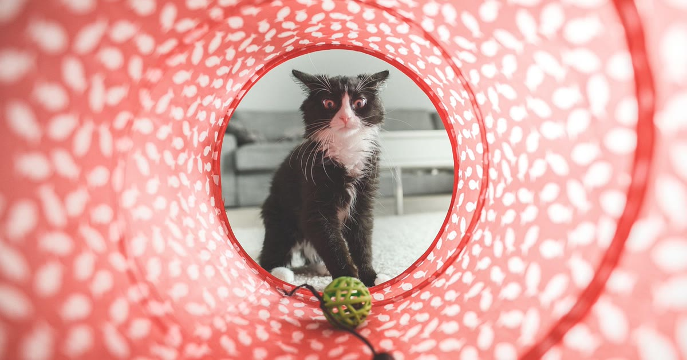

Um brinquedo interativo automático para gato se move sozinho — por motor, sensor infravermelho ou resposta ao toque — para manter o felino ativo fisicamente e mentalmente mesmo sem a presença do tutor. A escolha certa depende menos da marca e mais do tipo de estímulo que o seu gato prefere: perseguir, caçar, ou resolver um "quebra-cabeça" para conseguir petisco.
Este guia cobre os tipos disponíveis, preços reais no Mercado Livre e quando o investimento faz sentido.
Key Takeaways
- No Mercado Livre, brinquedos interativos automáticos para gato variam de cerca de R$ 11 a mais de R$ 800, com boas opções de entrada entre R$ 25 e R$ 30.
- Bolinhas inteligentes que se movem sozinhas ou respondem ao toque são o tipo mais popular, criando perseguições imprevisíveis que mantêm o gato entretido por horas.
- Modelos com sensor infravermelho ativam o movimento quando o gato está a poucos centímetros de distância e desligam sozinhos após alguns minutos sem uso, economizando bateria.
- Brinquedo interativo automático não substitui a brincadeira direta com o tutor — complementa a estimulação quando ele está ausente.
- Em gatos idosos, brinquedos de movimento suave (sem exigir saltos) ajudam na estimulação cognitiva sem sobrecarregar articulações.
Movem-se sozinhas ou respondem ao toque, criando perseguições imprevisíveis que mantêm o gato entretido por horas (comparativos de mercado consultados por Qual é a Melhor, retrieved 2026-08-22).
veja o comparativo de bolinhas inteligentes
Ativam o movimento automaticamente quando o gato está a cerca de 10 cm do sensor e param de funcionar sozinhos após alguns minutos sem uso, economizando energia.
entenda como funciona o sensor em detalhe
Em vez de servir a ração diretamente, o gato precisa manipular o brinquedo para liberar as guloseimas, incentivando o forrageamento — comportamento natural de busca por comida (achados sobre enriquecimento alimentar compilados por Gatoca, retrieved 2026-08-22).
veja os melhores comedouros interativos
Os preços variam de cerca de R$ 11,40 a R$ 833,98, com boas opções de entrada entre R$ 25,39 e R$ 29,99 (mesma fonte Qual é a Melhor citada acima, retrieved 2026-08-22). A fonte de energia também varia: pilha, bateria recarregável ou USB.
compare pilha x bateria recarregável em detalhe
Embora o mercado de brinquedos automáticos seja mais amplo para gatos, existem versões para cães que ficam sozinhos, geralmente com foco em movimento e dispensador de petisco combinado.
A interação com brinquedos que se movem estimula músculos, coordenação e agilidade, ajudando a evitar sedentarismo e obesidade em gatos que vivem em casa. Também desenvolve capacidade de resolução de problemas com puzzles e reduz stress ao proporcionar estímulos diversos (achados compilados por Pro Seu Pet, retrieved 2026-08-22).
veja como escolher para um gato entediado ou sedentário
Sim, com ajustes: gatos idosos preferem movimento suave, sem saltos ou corridas intensas, e brinquedos com catnip ou pelúcia costumam ser bem recebidos.
veja o guia completo para gatos idosos
Não existe um único "melhor" brinquedo interativo automático — existe o tipo certo para o comportamento do seu gato: perseguição (bolinha inteligente), forrageamento (comedouro interativo), ou estímulo por sensor (infravermelho). Nenhum deles substitui a brincadeira direta com o tutor, mas todos ajudam a preencher os períodos em que o gato fica sozinho.
veja as perguntas frequentes sobre brinquedo interativo para gato
Escrito pela Equipe Smart Pet Gadgets, redação especializada em comparativos de produtos pet no mercado brasileiro. Veja nossa política editorial e como verificamos as fontes citadas neste artigo.
🐾 Confira o preço e a disponibilidade atual no Mercado Livre.
Ver no Mercado Livre →Link de afiliado: podemos receber uma comissão por compras feitas através deste link, sem custo adicional para você.
Não. Ele complementa a estimulação física e mental do gato quando o tutor está ausente, mas não substitui a interação direta, que tem valor social e emocional que o brinquedo sozinho não oferece. Para evitar erros comuns de uso, confira os erros mais comuns ao usar brinquedo interativo para gato.
No Mercado Livre, os preços variam de cerca de R$ 11 a mais de R$ 800, com boas opções de entrada entre R$ 25 e R$ 30.
Sim, desde que o movimento seja suave e não exija saltos ou corridas intensas — gatos idosos se beneficiam de estimulação cognitiva mesmo com movimento reduzido.
Nildo Alves — curadoria de produtos pet no Smart Pet Gadgets. Testa e pesquisa produtos para cães e gatos, cruzando especificações de fabricante com boas práticas veterinárias e dados de mercado.
Sobre o Smart Pet Gadgets · Contato · Política editorial e de afiliados